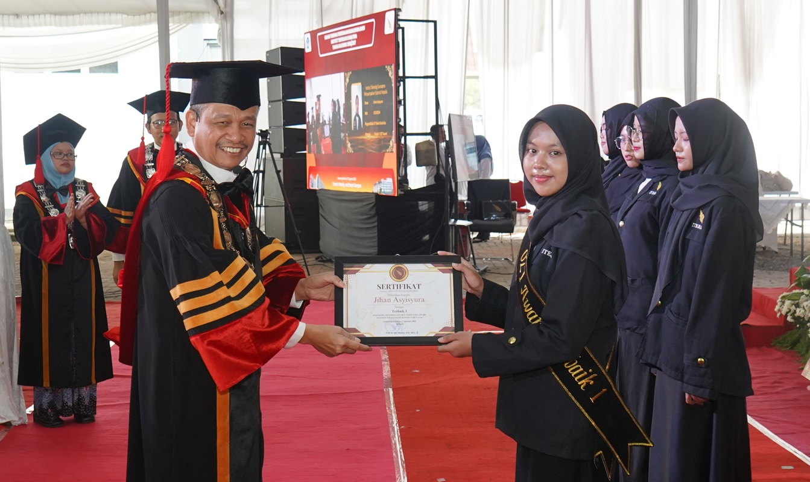

Selamat Datang di Berita ITERA
Website ini menyajikan informasi mengenai kegiatan, prestasi, dan berita terbaru seputar mahasiswa Institut Teknologi Sumatera.
Berita Terbaru
|
 |
Rektor ITERA Anugerahkan Penghargaan OZT dan OZTa 4.0 AwardInstitut Teknologi Sumatera memberikan penghargaan kepada mahasiswa berprestasi melalui OZT dan OZTa 4.0 Award. 11 Agustus 2026 Baca Selengkapnya |
Penerima OZT Award
| No. | Nama | Program Studi | Peringkat |
|---|---|---|---|
| 1 | Jihan Asyisyura | Teknik Geofisika | Terbaik 1 |
| 2 | Fa Zada Amadea Putri | Desain Komunikasi Visual | Terbaik 2 |
| 3 | Siti Aliskha Az Zahra | Perencanaan Wilayah dan Kota | Terbaik 3 |